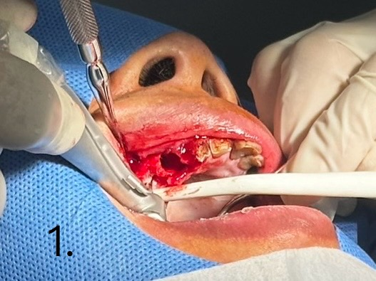
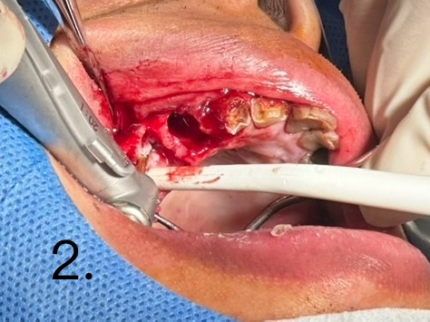
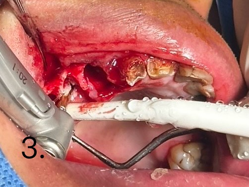
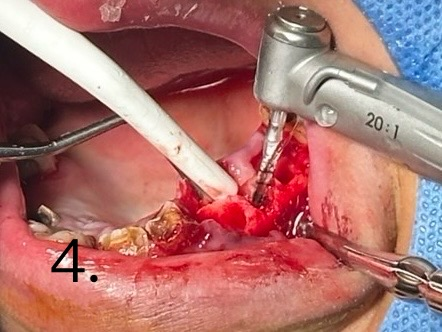
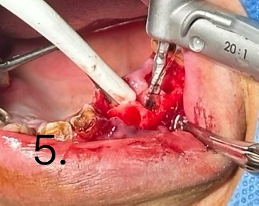
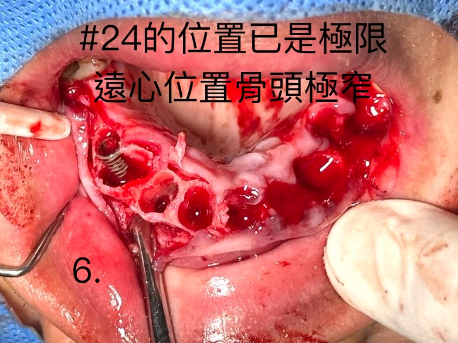
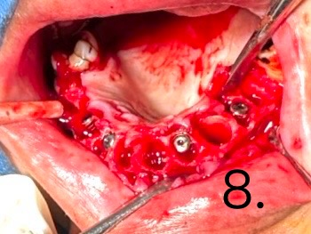
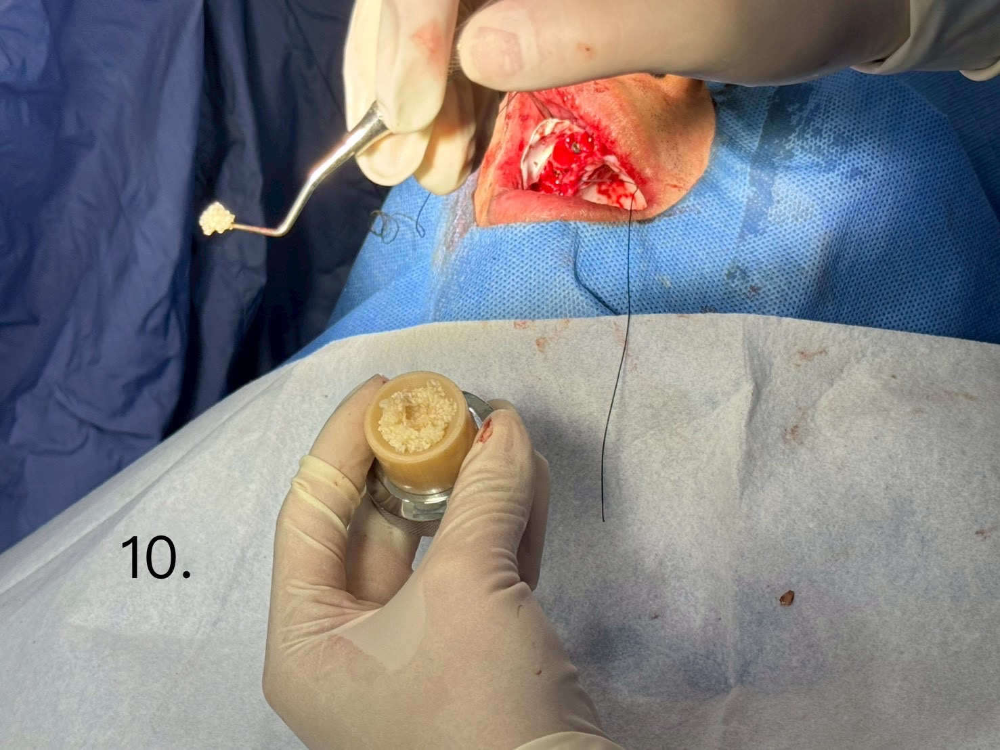
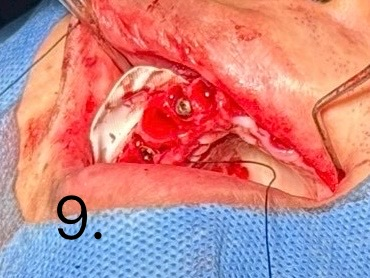
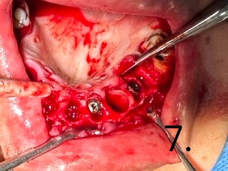

上顎all on 4 (一）
3D數位植牙｜案例分享
📋 案例概覽
Case Report: Maxillary Immediate Extraction, Immediate Implant Placement, and Bone Grafting for All-on-4 Full-Arch Reconstruction
Case Title: Maxillary Immediate Extraction, Immediate Placement, and Bone Grafting for All-on-4 Rehabilitation
Surgical Team: Dr. Chien & Surgical Team
• 1. Case Overview & Clinical Presentation
患者因上顎多顆殘根及嚴重牙周病變導致咀嚼功能喪失，經評估後決定進行 上顎全口 All-on-4 立即拔牙、立即植牙暨引導骨再生（GBR）重建手術。
本案例之手術挑戰在於：
拔牙後齒槽骨質不均與拔牙窩（Extraction socket）缺損。
上顎左側第一小臼齒（#24）區域之遠心側骨脊極為狹窄（Anatomical limitation: severe narrow ridge at distal aspect of #24）。
• 2. Step-by-Step Surgical Procedure (Surgical Steps 1–10)
圖 1–3 (Figure 1, 2, 3)：局部翻瓣、微創拔牙與植體窩洞修整（Alveoloplasty & Osteotomy）
實施全層黏膜骨膜瓣翻開（Full-thickness mucoperioperiosteal flap elevation），充分暴露上顎骨脊結構。
進行微創拔牙，並利用手機（Handpiece）與骨修整鑽頭對不規則齒槽骨進行適度之骨脊修整（Alveoloplasty），以建立平整且利於植體定位與未來假體設計之骨床。
圖 4–5 (Figure 4, 5)：植體窩洞精準鑽孔（Precision Osteotomy Preparation）
使用植牙手機（20:1 reduction handpiece）搭配引導鑽頭，於預定植入位置（包括前後軸向與傾斜角度）進行精準鑽孔（Osteotomy）。
確保植體鑽孔深度與角度符合 All-on-4 結構動力學需求，以達到最佳之初期穩定度（Primary stability）。
圖 6 (Figure 6)：植體定位與解剖限制評估（Implant Placement & Anatomical Evaluation）
圖中可見植體已植入上顎左側區域（#24 位置）。
關鍵手術發現： #24 位置之骨質已達解剖極限，其遠心側骨頭極為狹窄（Distal ridge is extremely narrow），需於後續步驟配合骨粉填補與屏障膜進行補骨處理。
圖 7–8 (Figure 7, 8)：全顎植體植入完成與齒槽窩檢查（All-on-4 Fixtures In Situ）
上顎 4 支植體（或預定結構之植體群）已順利植入於規劃位置，植体頂端（Platform）高度適當。
檢視剩餘拔牙窩（Extraction sockets）與植體周圍之跳躍間隙（Jump distance），準備進行引導骨再生術（GBR）。
圖 9–10 (Figure 9, 10)：骨粉充填與引導骨再生術（Bone Grafting & GBR Technique）
準備骨粉材料（Bone graft material）及膠原蛋白屏障膜（Collagen membrane）。
將骨粉充分填補於植体周圍間隙、拔牙窩及 #24 遠心狹窄骨脊處，外部覆蓋屏障膜（Membrane placement）以阻隔上皮細胞長入，促進骨質再生與整合。
• 3. Surgical Summary & Key Findings
Immediate Placement & Primary Stability: 於拔牙當次即刻完成植體植入，減少患者手術次數並有效維持軟硬組織輪廓。
Anatomical Adaptation: 針對 #24 遠心側骨脊極窄之解剖限制，採取精準鑽孔角度並補足補骨程序，克服骨量不足之風險。
Bone Augmentation (GBR): 結合骨粉與屏障膜進行跳躍間隙與骨缺損填補，為後續骨整合（Osseointegration）及長期假體穩定度提供堅實基礎。
🔑 治療要點
- All-on-4 全口重建技術 — 4 根植體支撐全顎假牙
- 即拔即種（Immediate Placement）縮短治療週期
- 數位化 3D 導航精準定位植體角度與深度
- GBR 引導骨再生術補足骨缺損，確保長期穩定
📷 臨床照片紀錄










本案例僅為醫療知識分享與學術討論用途，每位患者的口腔狀況與治療方案皆不相同。實際治療計畫需經由專業醫師進行完整評估後制定。本頁面已去除所有患者個人識別資訊，保護患者隱私。